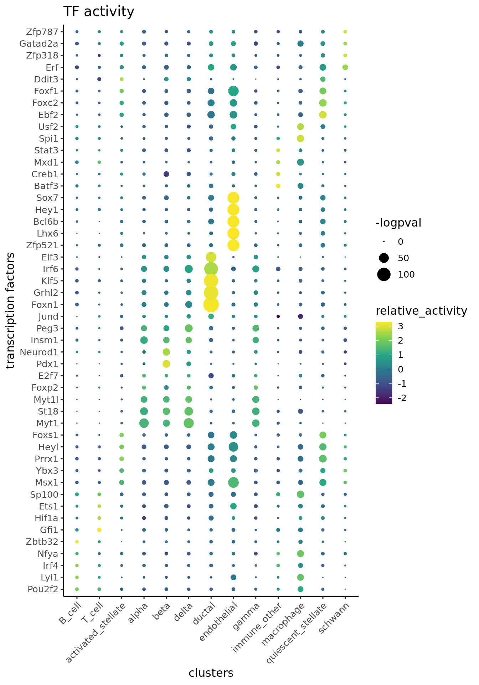
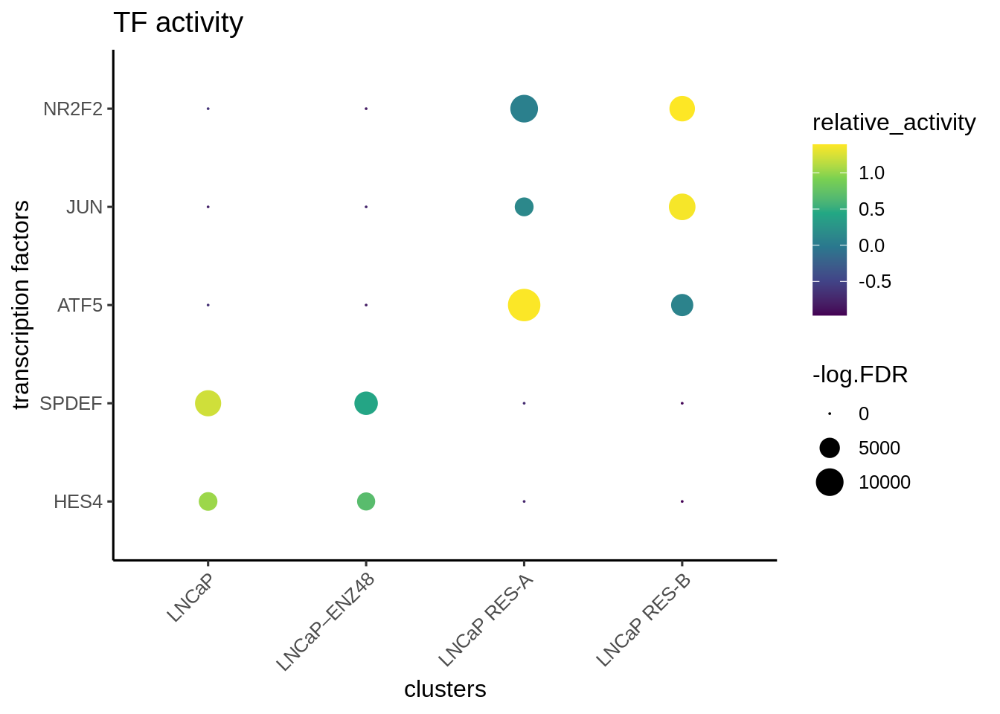
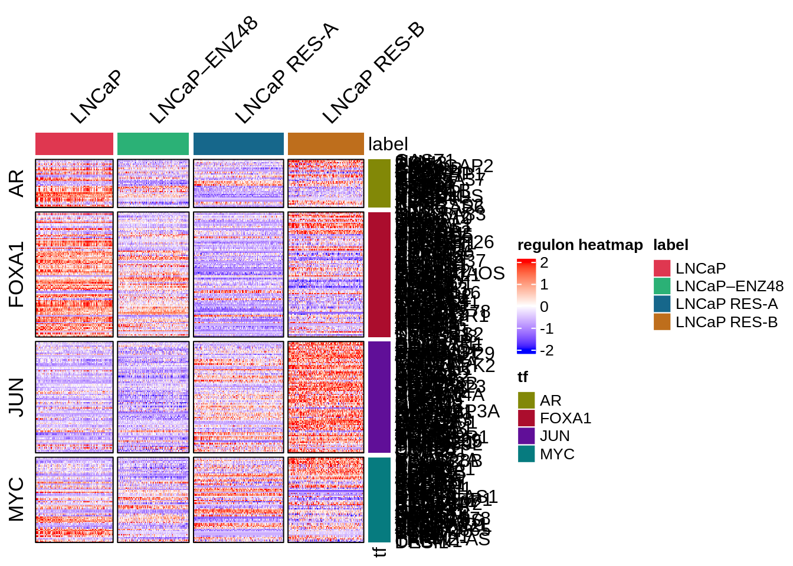
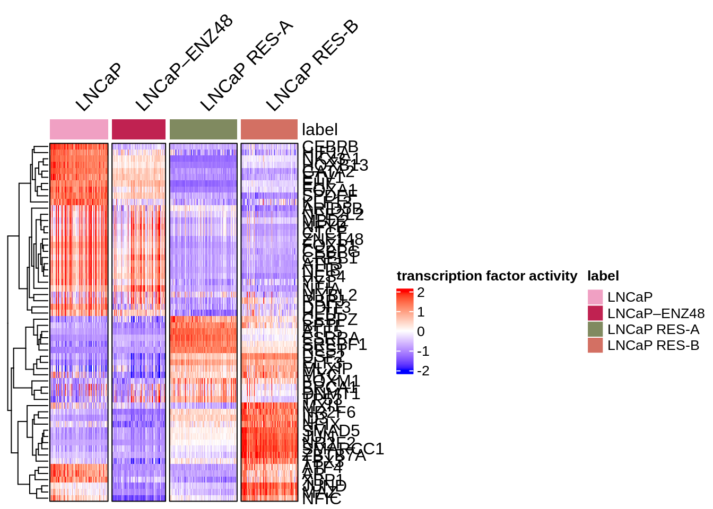
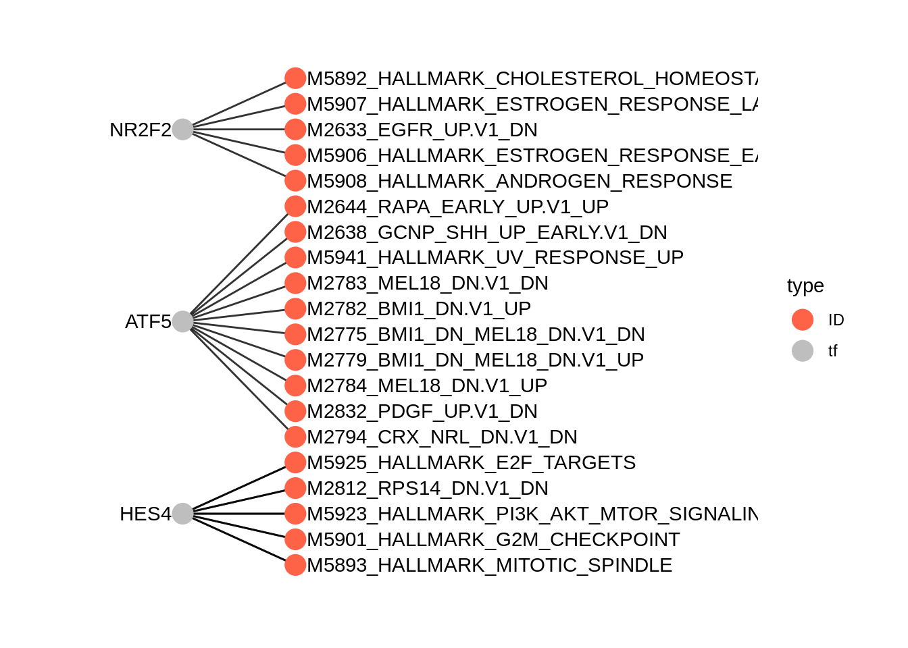
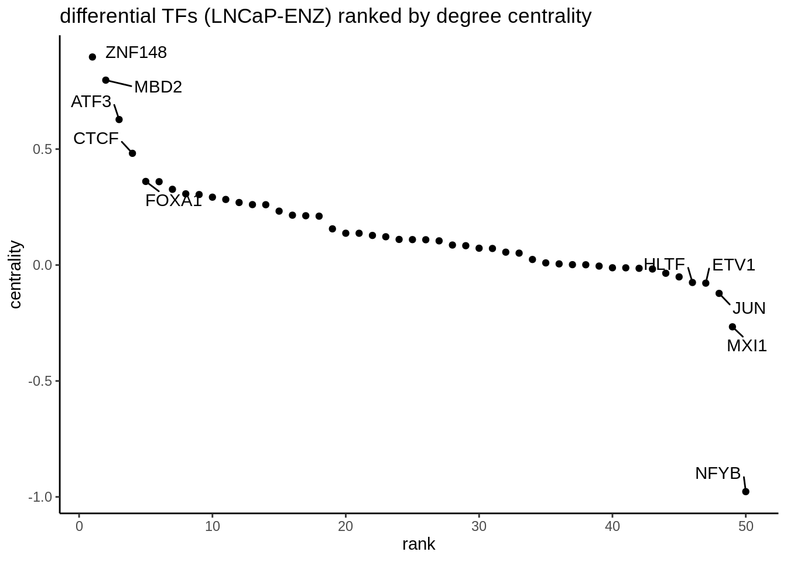
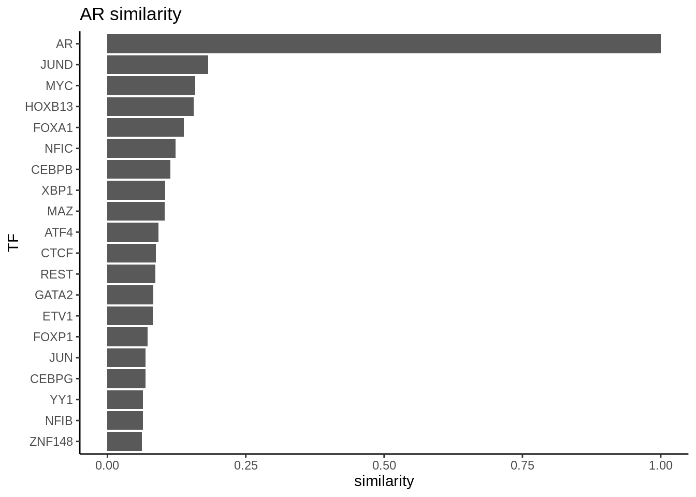

3 Hematopoeisis tutorial - MAE
In this chapter, we used a dataset from the ArchR tutorial. Prior to using epiregulon, this dataset has been fully preprocessed in ArchR, and converted to a MultiAssayExperiment using epireglon::archr2MAE. The MAE object was uploaded to scMultiome for full reproducibility. In this dataset, scRNAseq and scATACseq were unpaired and integrated by the ArchR::addGeneIntegrationMatrix function.
3.1 Data preparation
Download the example dataset from scMultiome package
mae <- scMultiome::hematopoiesis()## snapshotDate(): 2023-10-24## see ?scMultiome and browseVignettes('scMultiome') for documentation## loading from cache# Load peak matrix
PeakMatrix <- mae[["PeakMatrix"]]
# Load expression matrix
GeneExpressionMatrix <- mae[["GeneIntegrationMatrix"]]
# Add gene symbols to rownames
rownames(GeneExpressionMatrix) <- rowData(GeneExpressionMatrix)$name
# Transfer dimensionality reduction matrix to GeneExpression
reducedDim(GeneExpressionMatrix, "IterativeLSI") <-
reducedDim(mae[['TileMatrix500']], "IterativeLSI")
reducedDim(GeneExpressionMatrix, "UMAP") <-
reducedDim(mae[['TileMatrix500']], "UMAP")Visualize the data
scater::plotReducedDim(GeneExpressionMatrix,
dimred = "UMAP",
text_by = "Clusters2",
colour_by = "Clusters2",
point_size = 0.3,
point_alpha = 0.3)
3.2 Quick start
3.2.1 Retrieve bulk TF ChIP-seq binding sites
First, we retrieve the information of TF binding sites collected from Cistrome and ENCODE ChIP-seq. Currently, human genomes hg19 and hg38 and mouse genome mm10 are available
library(epiregulon)
grl <- getTFMotifInfo(genome = "hg19")## snapshotDate(): 2023-10-24## see ?scMultiome and browseVignettes('scMultiome') for documentation## loading from cachehead(grl)## GRangesList object of length 6:
## $`5-hmC`
## GRanges object with 22860 ranges and 0 metadata columns:
## seqnames ranges strand
## <Rle> <IRanges> <Rle>
## [1] chr1 10001-10685 *
## [2] chr1 13362-13694 *
## [3] chr1 29631-29989 *
## [4] chr1 40454-40754 *
## [5] chr1 135395-135871 *
## ... ... ... ...
## [22856] chrM 15303-15326 *
## [22857] chrM 15328-16172 *
## [22858] chrM 16174-16183 *
## [22859] chrM 16186-16224 *
## [22860] chrM 16226-16492 *
## -------
## seqinfo: 25 sequences from an unspecified genome; no seqlengths
##
## ...
## <5 more elements>3.2.2 Link ATACseq peaks to target genes
Next, we compute peak to gene correlations using a custom algorithm that has similar performance to ArchR’s P2G function. Wherever possible, use a multidimensional dimensionality reduction matrix such as LSI or PCA instead of UMAP or TSNE since the former provides a more accurate estimate of cell similarity.
set.seed(1010)
p2g <- calculateP2G(peakMatrix = PeakMatrix,
expMatrix = GeneExpressionMatrix,
exp_assay = "normalizedCounts",
reducedDim = reducedDim(GeneExpressionMatrix, "IterativeLSI"))## Using epiregulon to compute peak to gene links...## performing k means clustering to form metacells## Computing correlationp2g## DataFrame with 22004 rows and 8 columns
## idxATAC chr start end idxRNA target Correlation distance
## <integer> <character> <integer> <integer> <integer> <array> <matrix> <integer>
## 1 7 chr1 801002 801502 2 LINC00115 0.895735 36099
## 2 8 chr1 805039 805539 6 KLHL17 0.743856 88427
## 3 24 chr1 894453 894953 6 KLHL17 0.766909 0
## 4 24 chr1 894453 894953 9 ISG15 0.634559 51893
## 5 25 chr1 894960 895460 6 KLHL17 0.604835 0
## ... ... ... ... ... ... ... ... ...
## 22000 146402 chr22 51020398 51020898 12089 ARSA 0.522949 45503
## 22001 146403 chr22 51021154 51021654 12078 LMF2 0.633179 73018
## 22002 146403 chr22 51021154 51021654 12089 ARSA 0.675409 44747
## 22003 146412 chr22 51110826 51111326 12090 SHANK3 0.541264 0
## 22004 146421 chr22 51213512 51214012 12091 ACR 0.510150 366603.2.3 Add TF motif binding to peaks
The next step is to add the TF motif binding information by overlapping the regions of the peak matrix with the bulk chip-seq database.
overlap <- addTFMotifInfo(grl = grl, p2g = p2g, peakMatrix = PeakMatrix)## Computing overlap...## Success!head(overlap)## idxATAC idxTF tf
## 1018 7 35 ARNT
## 1019 7 50 ATF2
## 1020 7 55 ATF7
## 1021 7 76 BCL6
## 1022 7 80 BCOR
## 1023 7 82 BHLHE403.2.4 Generate regulons
A long format dataframe, representing the inferred regulons, is then generated. The dataframe consists of three columns:
- tf (transcription factor)
- target gene
- peak to gene correlation between tf and target gene
regulon <- getRegulon(p2g, overlap, aggregate=FALSE)
head(regulon)## DataFrame with 6 rows and 10 columns
## idxATAC chr start end idxRNA target distance idxTF tf corr
## <integer> <character> <integer> <integer> <integer> <character> <integer> <integer> <character> <matrix>
## 1 7 chr1 801002 801502 2 LINC00115 36099 35 ARNT 0.895735
## 2 7 chr1 801002 801502 2 LINC00115 36099 50 ATF2 0.895735
## 3 7 chr1 801002 801502 2 LINC00115 36099 55 ATF7 0.895735
## 4 7 chr1 801002 801502 2 LINC00115 36099 76 BCL6 0.895735
## 5 7 chr1 801002 801502 2 LINC00115 36099 80 BCOR 0.895735
## 6 7 chr1 801002 801502 2 LINC00115 36099 82 BHLHE40 0.8957353.2.5 Prune network
Epiregulon prunes the network by performing tests of independence on the observed number of cells jointly expressing transcription factor (TF), regulatory element (RE) and target gene (TG) vs the expected number of cells if TF/RE and TG are independently expressed. We implement two tests, the binomial test and the chi-square test. In the binomial test, the expected probability is P(TF, RE) * P(TG), and the number of trials is the total number of cells, and the observed successes is the number of cells jointly expressing all three elements. In the chi-square test, the expected probability for having all 3 elements active is also P(TF, RE) * P(TG) and the probability otherwise is 1- P(TF, RE) * P(TG). The observed cell count for the active category is the number of cells jointly expressing all three elements, and the cell count for the inactive category is n - n_triple.
We calculate cluster-specific p-values if users supply cluster labels. This is useful if we are interested in cluster-specific networks. The pruned regulons can then be used to visualize differential networks for transcription factors of interest. See section on differential networks.
pruned.regulon <- pruneRegulon(expMatrix = GeneExpressionMatrix,
exp_assay = "normalizedCounts",
peakMatrix = PeakMatrix,
peak_assay = "counts",
regulon = regulon,
prune_value = "pval",
regulon_cutoff = 0.05,
clusters = GeneExpressionMatrix$Clusters2,
exp_cutoff = NULL)## pruning network with chi.sq tests using a regulon cutoff of pval<0.05## pruning regulons3.2.6 Add Weights
While the `pruneRegulon’ function provides statistics on the joint occurrence of TF-RE-TG, we would like to further estimate the strength of regulation. Biologically, this can be interpreted as the magnitude of gene expression changes induced by transcription factor activity. Epiregulon estimates the regulatory potential using one of the four measures: 1) correlation between TF and target gene expression, 2) mutual information between the TF and target gene expression, 3) Wilcoxon test statistics of target gene expression in cells jointly expressing all 3 elements vs cells that do not, or 4) log 2 fold difference of target gene expression in cells jointly expressing all 3 elements vs cells that do not.
Three measures (correlation, Wilcoxon statistics and log 2 fold difference) give both the magnitude and directionality of changes whereas mutational information is always positive. The correlation and mutual information statistics are computed on grouped pseudobulks by user-supplied cluster labels and yield a single weight across all clusters per each TF-RE-target triplet. In contrast, Wilcoxon and log fold change methods group cells based on the joint expression of TF, RE and TG in each single cell or in cell aggregates. Cell aggregation uses a default value of 10 cells and can help overcome sparsity and speed up computation. If cluster labels are provided, we can obtain weights of individual clusters and all cells combined. In this example, we apply Wilcoxon test on cell aggregates of 10 cells.
regulon.w <- addWeights(regulon = pruned.regulon,
expMatrix = GeneExpressionMatrix,
exp_assay = "normalizedCounts",
peakMatrix = PeakMatrix,
peak_assay = "counts",
clusters = GeneExpressionMatrix$Clusters2,
aggregateCells = TRUE,
method = "wilcox",
useDim = "IterativeLSI")## adding weights using wilcoxon...## performing pseudobulk using an average of 10 cellsregulon.w## DataFrame with 2292760 rows and 14 columns
## idxATAC chr start end idxRNA target distance idxTF tf corr
## <integer> <character> <integer> <integer> <integer> <character> <integer> <integer> <character> <matrix>
## 1 26 chr1 895689 896189 6 KLHL17 0 5 ADNP 0.595722
## 2 26 chr1 895689 896189 9 ISG15 50657 5 ADNP 0.569188
## 3 463 chr1 3709928 3710428 66 SMIM1 20394 5 ADNP 0.610804
## 4 732 chr1 8021367 8021867 95 UTS2 46072 5 ADNP 0.593762
## 5 733 chr1 8021996 8022496 95 UTS2 46701 5 ADNP 0.591618
## ... ... ... ... ... ... ... ... ... ... ...
## 2292756 145986 chr22 46645960 46646460 12045 PPARA 99261 1557 ZXDC 0.549096
## 2292757 145987 chr22 46646470 46646970 12045 PPARA 99771 1557 ZXDC 0.554923
## 2292758 146374 chr22 50963929 50964429 12078 LMF2 15793 1557 ZXDC 0.689212
## 2292759 146403 chr22 51021154 51021654 12078 LMF2 73018 1557 ZXDC 0.633179
## 2292760 146403 chr22 51021154 51021654 12089 ARSA 44747 1557 ZXDC 0.675409
## pval stats qval
## <matrix> <matrix> <matrix>
## 1 2.12324e-01:2.36663e-01:0.6405757:... 1.55551: 1.40036:0.217990:... 1.00000e+00:1:1:...
## 2 9.52210e-05:2.84547e-02:0.4447283:... 15.22917: 4.80030:0.584052:... 1.00000e+00:1:1:...
## 3 2.88106e-04:1.00000e+00:0.4032360:... 13.14618: 0.00000:0.698655:... 1.00000e+00:1:1:...
## 4 2.71837e-29:3.79230e-06:0.0117417:... 126.24453:21.36706:6.349467:... 8.01807e-23:1:1:...
## 5 4.45015e-06:6.06719e-03:0.2144717:... 21.06047: 7.53024:1.540982:... 1.00000e+00:1:1:...
## ... ... ... ...
## 2292756 0.852623645:0.424559:0.337005:... 0.0345112:0.6376622:0.9217923:... 1:1:1:...
## 2292757 0.242104230:0.800758:0.304168:... 1.3682997:0.0636888:1.0558312:... 1:1:1:...
## 2292758 0.833286943:0.390888:0.725549:... 0.0443051:0.7361788:0.1232378:... 1:1:1:...
## 2292759 0.000372059:0.308149:0.868956:... 12.6675377:1.0385922:0.0272198:... 1:1:1:...
## 2292760 0.026174461:0.017739:0.698380:... 4.9444569:5.6217414:0.1501623:... 1:1:1:...
## weight
## <matrix>
## 1 0.107149: 0.4231457:0.2368892:...
## 2 0.180432: 0.3966991:0.2125929:...
## 3 0.123088:-0.0827606:0.0872641:...
## 4 0.150402: 0.2869753:0.3338592:...
## 5 0.136803: 0.0152085:0.2251617:...
## ... ...
## 2292756 0.000726069:-0.0161671:0.0000000:...
## 2292757 0.043667547: 0.0986710:0.0000000:...
## 2292758 0.103316818: 0.3103894:0.0000000:...
## 2292759 0.104718509: 0.3815615:0.0727201:...
## 2292760 0.087638797:-0.1719992:0.0000000:...#saveRDS(regulon, "/gstore/project/lineage/manuscript/epiregulon/OUTPUT/regulon.rds")
#saveRDS(regulon.w, "/gstore/project/lineage/manuscript/epiregulon/OUTPUT/regulon.w.rds")3.2.7 Calculate TF activity
Finally, the activities for a specific TF in each cell are computed by averaging the weighted expressions of target genes linked to the TF weighted. \[y=\frac{1}{n}\sum_{i=1}^{n} x_i * weight_i\] where \(y\) is the activity of a TF for a cell \(n\) is the total number of targets for a TF \(x_i\) is the log count expression of target i where i in {1,2,…,n} \(weight_i\) is the weight of TF and target i
score.combine <- calculateActivity(expMatrix = GeneExpressionMatrix,
regulon = regulon.w,
mode = "weight",
method = "weightedMean",
exp_assay = "normalizedCounts")## calculating TF activity from regulon using weightedmean## Warning in calculateActivity(expMatrix = GeneExpressionMatrix, regulon = regulon.w, : The weight column contains
## multiple subcolumns but no cluster information was provided. Using first column to compute activity...## aggregating regulons...## creating weight matrix...## calculating activity scores...## normalize by the number of targets...head(score.combine[1:5,1:5])## 5 x 5 sparse Matrix of class "dgCMatrix"
## scATAC_BMMC_R1#TTATGTCAGTGATTAG-1 scATAC_BMMC_R1#AAGATAGTCACCGCGA-1 scATAC_BMMC_R1#GCATTGAAGATTCCGT-1
## ADNP 0.3247975 0.3566263 0.2619925
## AEBP2 0.1181665 0.3533748 0.2303255
## AFF1 0.2554757 0.2769220 0.2502943
## AFF4 0.3477904 0.4799658 0.3094043
## AGO1 0.2357290 0.3934343 0.2176925
## scATAC_BMMC_R1#TATGTTCAGGGTTCCC-1 scATAC_BMMC_R1#AGTTACGAGAACGTCG-1
## ADNP 0.3009295 0.3406015
## AEBP2 0.1783639 0.1254906
## AFF1 0.2478131 0.2491399
## AFF4 0.3708383 0.3498188
## AGO1 0.2753658 0.24411363.2.8 Differential TF activity test
We can next determine which TFs exhibit differential activities across cell clusters/groups via the findDifferentialActivity function. This function depends on findMarkers function from scran package.
library(epiregulon.extra)
markers <- findDifferentialActivity(activity_matrix = score.combine,
groups = GeneExpressionMatrix$Clusters2,
pval.type = "some",
direction = "up",
test.type = "t")getSigGenes compiles the different test results into a single dataframe and enables user to supply their desired cutoffs for significance and variable to order by.
markers.sig <- getSigGenes(markers, topgenes = 3 )## Using a logFC cutoff of 0.1 for class B## Using a logFC cutoff of 0.4 for class CD4.M## Using a logFC cutoff of 0.2 for class CD4.N## Using a logFC cutoff of 0.1 for class CLP## Using a logFC cutoff of 0.2 for class Erythroid## Using a logFC cutoff of 0.2 for class GMP## Using a logFC cutoff of 0.4 for class Mono## Using a logFC cutoff of 0.4 for class NK## Using a logFC cutoff of 0.1 for class PreB## Using a logFC cutoff of 0.1 for class Progenitor## Using a logFC cutoff of 0.1 for class pDC3.2.9 Visualizing TF activities
Epiregulon also provides multiple options for visualizing the inferred TF activities by reduced dimensional space
tSNE or UMAP plots:
tfs_interest <- c("EBF1","GATA3", "SPI1", "GATA2")
plotActivityDim(sce = GeneExpressionMatrix,
activity_matrix = score.combine[tfs_interest,],
tf = tfs_interest,
dimtype = "UMAP",
nrow=2,
ncol=2,
point_size=0.1,
rasterise = TRUE) We can compare the activity with gene expression of the same TFs.
#options(ggrastr.default.dpi=300)
plotActivityDim(sce = GeneExpressionMatrix,
activity_matrix = assay(GeneExpressionMatrix, "normalizedCounts")[tfs_interest,],
tf = tfs_interest,
dimtype = "UMAP",
nrow=2,
ncol=2,
legend.label = "Gex",
colors = c("grey","blue"),
#limit = c(0,2),
point_size=0.1,
rasterise = TRUE)
We can also plot violin plot to visualize TF activity.
plotActivityViolin(activity_matrix = score.combine,
tf = tfs_interest,
clusters = GeneExpressionMatrix$Clusters2,
nrow=2,
ncol=2) We plot violin plot to visualize TF gene expression.
We plot violin plot to visualize TF gene expression.
plotActivityViolin(activity_matrix = assay(GeneExpressionMatrix, "normalizedCounts")[tfs_interest,],
tf = tfs_interest,
clusters = GeneExpressionMatrix$Clusters2,
nrow=2,
ncol=2,
legend.label = "gene expression")
We can visualize the different TFs in a bubble plot:
plotBubble(activity_matrix = score.combine,
tf = tfs_interest,
GeneExpressionMatrix$Clusters2,
bubblesize = "FDR")
We visualize the top differential TFs based on activity.
plotBubble(activity_matrix = score.combine,
tf = markers.sig$tf,
GeneExpressionMatrix$Clusters2,
bubblesize = "FDR")
3.2.10 Geneset enrichment
Sometimes we are interested to know what pathways are enriched in the regulon of a particular TF. We can perform geneset enrichment using the enricher function from clusterProfiler.
Here we first download Hallmark and C2 signatures from hallmark and then perform gene set enrichment of the known lineage factors. As expected, EBF1 is consistent with a B cell lineage factor, GATA3 and RUNX3 with lymphoid lineage and SPI1 with myeloid lineage.
#retrieve genesets
H <- EnrichmentBrowser::getGenesets(org = "hsa",
db = "msigdb",
cat = "H",
gene.id.type = "SYMBOL" )## Using cached version from 2023-11-17 18:29:09C2 <- EnrichmentBrowser::getGenesets(org = "hsa",
db = "msigdb",
cat = "C2",
gene.id.type = "SYMBOL" )## Using cached version from 2023-11-12 20:06:04#combine genesets and convert genesets to be compatible with enricher
gs <- c(H, C2)
gs.list <- do.call(rbind,lapply(names(gs), function(x)
{data.frame(gs=x, genes=gs[[x]])}))
enrichresults <- regulonEnrich(TF = tfs_interest,
regulon = regulon.w,
weight = "weight",
weight_cutoff = 0,
genesets = gs.list)## EBF1## GATA3## SPI1## GATA2#plot results
enrichPlot(results = enrichresults, ncol=2) ## Differential Network analysis
## Differential Network analysis
In addition to looking at the summed TF activity, a second approach to investigate differential TF activity is to compare and contrast target genes or network topology. In this example, we know that EBF1 is a B cell lineage factor. If we plot the differential network of EBF1 using the regulon with cluster-specific weights, we can see that EBF1 has many more targets in PreB cells than it has in CD4 memory cells.
plotDiffNetwork(regulon.w,
cutoff = 0,
tf = c("EBF1"),
weight = "weight",
clusters = c("PreB","CD4.M"),
layout = "stress")## Replacement of na values for weights with 0## Building graph using weight as edge weights Sometimes, we are interested to identify interaction partners of the TFs of interest. This can be achieved by comparing the overlap of the targets genes for all the TFs and identify the most similar TFs by Jaccard similarity. To illustrate this function, we take a look at the top most similar 20 TFs to EBF1, and we successfully identify PAX5 as the most similar TF. Both PAX5 and EBF1 are important factors for B cell development (https://www.nature.com/articles/ni.2641).
Sometimes, we are interested to identify interaction partners of the TFs of interest. This can be achieved by comparing the overlap of the targets genes for all the TFs and identify the most similar TFs by Jaccard similarity. To illustrate this function, we take a look at the top most similar 20 TFs to EBF1, and we successfully identify PAX5 as the most similar TF. Both PAX5 and EBF1 are important factors for B cell development (https://www.nature.com/articles/ni.2641).
# construct a graph of the preB cells
preB_network <- buildGraph(regulon.w, weights = "weight", cluster="PreB")## Building graph using weight as edge weights# compute a similarity matrix of all TFs
similarity_score <- calculateJaccardSimilarity(preB_network)
# Focus on EBF1
similarity_score_EBF1 <- similarity_score[, "EBF1"]
similarity_df <- data.frame(similarity = head(sort(similarity_score_EBF1,
decreasing = TRUE),20),
TF = names(head(sort(similarity_score_EBF1,
decreasing = TRUE),20)))
similarity_df$TF <- factor(similarity_df$TF, levels = rev(unique(similarity_df$TF)))
# plot top TFs most similar to EBF1
topTFplot <- ggplot(similarity_df, aes(x=TF, y=similarity)) +
geom_bar(stat="identity") +
coord_flip() +
ggtitle("EBF1 similarity") +
theme_classic()
print(topTFplot)
In order to convince ourselves that our differential network is statistically significant, we permute the edges and obtain a background graph from averaging many iterations. Here, we plot the differential network graph subtracted by permuted graphs.
# create a permuted graph by rewiring the edges 100 times
permute_matrix <- permuteGraph(preB_network, "EBF1", 100, p=1)
permute_matrix <- permute_matrix[names(similarity_score_EBF1),]
diff_matrix <- similarity_score_EBF1-rowMeans(permute_matrix)
diff_matrix_df <- data.frame(similarity = head(sort(diff_matrix,
decreasing = TRUE),20),
TF = names(head(sort(diff_matrix,
decreasing = TRUE),20)))
diff_matrix_df$TF <- factor(diff_matrix_df$TF, levels = rev(unique(diff_matrix_df$TF)))
# plot top TFs most similar to EBF1
topTFplot <- ggplot(diff_matrix_df, aes(x=TF, y=similarity)) +
geom_bar(stat="identity") +
coord_flip() +
ggtitle("background subtracted EBF1 similarity ") +
theme_classic()
print(topTFplot)
# obtain empirical p-values
p_matrix <- rowMeans(apply(permute_matrix, 2, function(x) {x > similarity_score_EBF1}))
p_matrix[names(head(sort(diff_matrix,decreasing = TRUE),20))]## PAX5 IRF4 POU2F2 RELB IKZF2 FOXP1 BCL6 RUNX3 FOXO1 TCF4 NIPBL RAG1 BCL11A BCLAF1 IKZF1 CREBBP
## 0 0 0 0 0 0 0 0 0 0 0 0 0 0 0 0
## NFATC1 KMT2D CHD2 BCL3
## 0 0 0 0Next, we are interested to compare the networks of two cell types, in this case, CD4 memory cells (CD4.M) vs Monocytes (mono) cells. We build an edge subtracted graph and then calculate the degree centrality of the subtracted graph. We normalize centrality using the default square root function. The top 5 most positive TFs represent lineage factors more active in NK cells whereas the bottom 5 TFs present lineage factors enriched in CD4. We successfully identified the myeloid factor SPI1 to be associated with monocytes and Th1 factor TBX21 to be associated with CD4 cells.
# construct a graph of the CD4.M and NK cells respectively
CD4.M_network <- buildGraph(regulon.w, weights = "weight", cluster="CD4.M")## Building graph using weight as edge weightsMono_network <- buildGraph(regulon.w, weights = "weight", cluster="Mono")## Building graph using weight as edge weights# construct a difference graph
diff_graph <- buildDiffGraph( Mono_network,CD4.M_network, abs_diff = FALSE)
diff_graph <- addCentrality(diff_graph)
diff_graph <- normalizeCentrality(diff_graph)
rank_table <- rankTfs(diff_graph)
library(ggplot2)
ggplot(rank_table, aes(x = rank, y = centrality)) +
geom_point() +
ggrepel::geom_text_repel(data = rbind(head(rank_table, 5),
tail(rank_table,5)),
aes(label = tf),
nudge_x = 0, nudge_y = 0, box.padding = 0.5) +
theme_classic() + ggtitle ("differential TFs (Mono-CD4.M) ranked by degree centrality")
We can further explore interacting factors with the myeloid factor SPI1 using the same Jaccard similarity approach. We found CEBPA as the most similar TF as SPI1. SPI1 and CEBPA are known to be important for differentiation into myeloid cells (https://www.cell.com/cell-reports/pdfExtended/S2211-1247(18)30745-9).
library(igraph)##
## Attaching package: 'igraph'## The following objects are masked from 'package:rtracklayer':
##
## blocks, path## The following object is masked from 'package:BiocIO':
##
## path## The following object is masked from 'package:Biostrings':
##
## union## The following object is masked from 'package:XVector':
##
## path## The following objects are masked from 'package:DelayedArray':
##
## path, simplify## The following object is masked from 'package:gtools':
##
## permute## The following object is masked from 'package:HDF5Array':
##
## path## The following object is masked from 'package:GenomicRanges':
##
## union## The following object is masked from 'package:IRanges':
##
## union## The following object is masked from 'package:S4Vectors':
##
## union## The following objects are masked from 'package:BiocGenerics':
##
## normalize, path, union## The following objects are masked from 'package:stats':
##
## decompose, spectrum## The following object is masked from 'package:base':
##
## uniondiff_graph_filter <- subgraph.edges(diff_graph,
E(diff_graph)[E(diff_graph)$weight>0],
del=T)
# compute a similarity matrix of all TFs
similarity_score <- calculateJaccardSimilarity(diff_graph_filter)
# Focus on SPI1
similarity_score_SPI1 <- similarity_score[, "SPI1"]
similarity_df <- data.frame(similarity = head(sort(similarity_score_SPI1,
decreasing = TRUE),20),
TF = names(head(sort(similarity_score_SPI1,
decreasing = TRUE),20)))
similarity_df$TF <- factor(similarity_df$TF,
levels = rev(unique(similarity_df$TF)))
# plot top TFs most similar to SPI1
topTFplot <- ggplot(similarity_df, aes(x=TF, y=similarity)) +
geom_bar(stat="identity") +
coord_flip() +
ggtitle("SPI1 similarity") +
theme_classic()
print(topTFplot)
3.3 Session Info
sessionInfo()## R version 4.3.0 (2023-04-21)
## Platform: x86_64-pc-linux-gnu (64-bit)
## Running under: Ubuntu 18.04.6 LTS
##
## Matrix products: default
## BLAS: /usr/local/lib/R/lib/libRblas.so
## LAPACK: /usr/local/lib/R/lib/libRlapack.so; LAPACK version 3.11.0
##
## Random number generation:
## RNG: L'Ecuyer-CMRG
## Normal: Inversion
## Sample: Rejection
##
## locale:
## [1] LC_CTYPE=en_US.UTF-8 LC_NUMERIC=C LC_TIME=C LC_COLLATE=C LC_MONETARY=C
## [6] LC_MESSAGES=C LC_PAPER=C LC_NAME=C LC_ADDRESS=C LC_TELEPHONE=C
## [11] LC_MEASUREMENT=C LC_IDENTIFICATION=C
##
## time zone: Etc/UTC
## tzcode source: system (glibc)
##
## attached base packages:
## [1] grid stats4 stats graphics grDevices utils datasets methods base
##
## other attached packages:
## [1] igraph_1.5.1 BSgenome.Hsapiens.UCSC.hg38_1.4.5 BSgenome_1.69.1
## [4] rtracklayer_1.61.2 BiocIO_1.11.0 Biostrings_2.69.2
## [7] XVector_0.41.2 org.Hs.eg.db_3.18.0 AnnotationDbi_1.63.2
## [10] msigdbr_7.5.1 DelayedArray_0.27.10 epiregulon.extra_0.99.0
## [13] rhdf5_2.45.1 RcppArmadillo_0.12.6.4.0 Rcpp_1.0.11
## [16] sparseMatrixStats_1.13.4 data.table_1.14.8 stringr_1.5.0
## [19] plyr_1.8.9 magrittr_2.0.3 ggplot2_3.4.4
## [22] gtable_0.3.4 gtools_3.9.4 gridExtra_2.3
## [25] devtools_2.4.5 usethis_2.1.6 ArchR_1.0.3
## [28] Matrix_1.6-3 HDF5Array_1.29.3 scMultiome_1.1.2
## [31] MultiAssayExperiment_1.27.5 ExperimentHub_2.9.1 AnnotationHub_3.9.2
## [34] BiocFileCache_2.9.1 dbplyr_2.3.4 epiregulon_1.0.36
## [37] SingleCellExperiment_1.23.0 SummarizedExperiment_1.31.1 Biobase_2.61.0
## [40] GenomicRanges_1.53.3 GenomeInfoDb_1.37.7 IRanges_2.35.3
## [43] S4Vectors_0.39.3 BiocGenerics_0.47.1 MatrixGenerics_1.13.2
## [46] matrixStats_1.0.0 rmarkdown_2.25 bookdown_0.36
##
## loaded via a namespace (and not attached):
## [1] R.methodsS3_1.8.2 GSEABase_1.63.0 urlchecker_1.0.1
## [4] poweRlaw_0.70.6 vctrs_0.6.3 digest_0.6.31
## [7] png_0.1-8 shape_1.4.6 ggrepel_0.9.4
## [10] magick_2.8.1 MASS_7.3-60 reshape2_1.4.4
## [13] httpuv_1.6.11 foreach_1.5.2 qvalue_2.33.0
## [16] withr_2.5.0 ggrastr_1.0.2 xfun_0.39
## [19] ggfun_0.1.3 ellipsis_0.3.2 memoise_2.0.1
## [22] ggbeeswarm_0.7.2 clusterProfiler_4.9.5 gson_0.1.0
## [25] profvis_0.3.8 tidytree_0.4.5 GlobalOptions_0.1.2
## [28] KEGGgraph_1.61.0 R.oo_1.25.0 prettyunits_1.1.1
## [31] KEGGREST_1.41.4 promises_1.2.0.1 httr_1.4.6
## [34] restfulr_0.0.15 rhdf5filters_1.13.5 ps_1.7.5
## [37] rstudioapi_0.15.0 miniUI_0.1.1.1 generics_0.1.3
## [40] DOSE_3.27.3 processx_3.8.1 babelgene_22.9
## [43] curl_5.0.0 zlibbioc_1.47.0 ScaledMatrix_1.9.1
## [46] ggraph_2.1.0 polyclip_1.10-6 GenomeInfoDbData_1.2.11
## [49] SparseArray_1.1.12 interactiveDisplayBase_1.39.0 xtable_1.8-4
## [52] pracma_2.4.2 doParallel_1.0.17 evaluate_0.21
## [55] S4Arrays_1.1.6 hms_1.1.3 irlba_2.3.5.1
## [58] colorspace_2.1-0 filelock_1.0.2 readr_2.1.4
## [61] Rgraphviz_2.45.0 later_1.3.1 viridis_0.6.4
## [64] ggtree_3.9.1 lattice_0.22-5 XML_3.99-0.14
## [67] scuttle_1.11.3 shadowtext_0.1.2 cowplot_1.1.1
## [70] pillar_1.9.0 nlme_3.1-163 iterators_1.0.14
## [73] caTools_1.18.2 compiler_4.3.0 beachmat_2.17.17
## [76] stringi_1.7.12 GenomicAlignments_1.37.0 MPO.db_0.99.7
## [79] crayon_1.5.2 abind_1.4-5 scater_1.29.4
## [82] gridGraphics_0.5-1 locfit_1.5-9.8 graphlayouts_1.0.1
## [85] bit_4.0.5 dplyr_1.1.3 fastmatch_1.1-4
## [88] codetools_0.2-19 BiocSingular_1.17.1 bslib_0.5.1
## [91] GetoptLong_1.0.5 mime_0.12 splines_4.3.0
## [94] circlize_0.4.15 HDO.db_0.99.1 EnrichmentBrowser_2.31.5
## [97] knitr_1.44 blob_1.2.4 utf8_1.2.3
## [100] clue_0.3-65 BiocVersion_3.18.0 seqLogo_1.67.0
## [103] fs_1.6.2 checkmate_2.2.0 DelayedMatrixStats_1.23.9
## [106] pkgbuild_1.4.0 ggplotify_0.1.2 tibble_3.2.1
## [109] callr_3.7.3 statmod_1.5.0 tzdb_0.4.0
## [112] tweenr_2.0.2 pkgconfig_2.0.3 tools_4.3.0
## [115] cachem_1.0.8 RSQLite_2.3.1 viridisLite_0.4.2
## [118] DBI_1.1.3 fastmap_1.1.1 scales_1.2.1
## [121] Rsamtools_2.17.0 sass_0.4.6 patchwork_1.1.3
## [124] BiocManager_1.30.22 graph_1.79.4 farver_2.1.1
## [127] tidygraph_1.2.3 scatterpie_0.2.1 yaml_2.3.7
## [130] cli_3.6.1 purrr_1.0.2 motifmatchr_1.23.0
## [133] lifecycle_1.0.3 bluster_1.11.4 sessioninfo_1.2.2
## [136] backports_1.4.1 BiocParallel_1.35.4 annotate_1.79.0
## [139] rjson_0.2.21 parallel_4.3.0 ape_5.7-1
## [142] limma_3.57.11 jsonlite_1.8.7 edgeR_3.99.6
## [145] TFBSTools_1.40.0 bitops_1.0-7 HPO.db_0.99.2
## [148] bit64_4.0.5 yulab.utils_0.1.0 BiocNeighbors_1.19.0
## [151] CNEr_1.37.0 jquerylib_0.1.4 metapod_1.9.0
## [154] GOSemSim_2.27.3 dqrng_0.3.1 R.utils_2.12.2
## [157] lazyeval_0.2.2 shiny_1.7.5.1 htmltools_0.5.5
## [160] enrichplot_1.21.3 GO.db_3.18.0 rappdirs_0.3.3
## [163] glue_1.6.2 TFMPvalue_0.0.9 RCurl_1.98-1.12
## [166] treeio_1.25.4 scran_1.29.3 R6_2.5.1
## [169] tidyr_1.3.0 labeling_0.4.3 cluster_2.1.4
## [172] pkgload_1.3.2 Rhdf5lib_1.23.2 aplot_0.2.2
## [175] DirichletMultinomial_1.43.0 tidyselect_1.2.0 vipor_0.4.5
## [178] ggforce_0.4.1 rsvd_1.0.5 munsell_0.5.0
## [181] BiocStyle_2.29.2 htmlwidgets_1.6.2 fgsea_1.27.1
## [184] ComplexHeatmap_2.17.0 RColorBrewer_1.1-3 rlang_1.1.1
## [187] remotes_2.4.2 fansi_1.0.4 Cairo_1.6-1
## [190] beeswarm_0.4.0